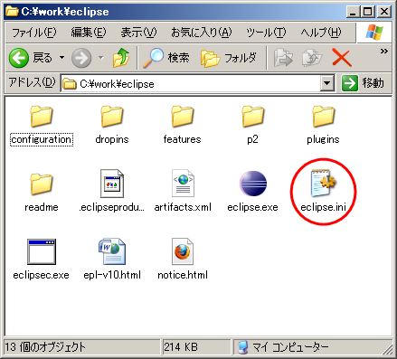
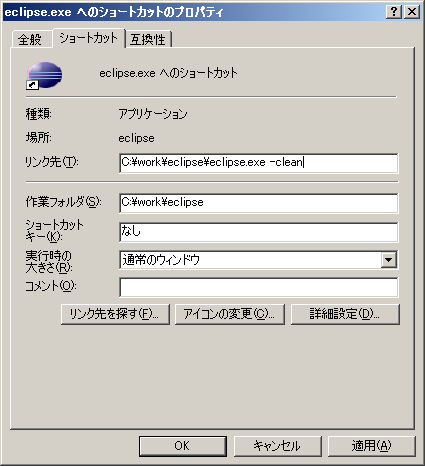
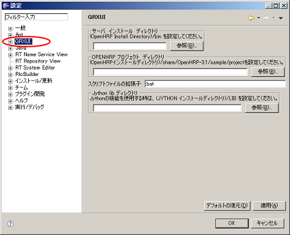

Table of contents1. Initial setting of EclipseFor UbuntuEclipse.ini settings
In this section we discuss how to manage the heap memory according to the environmental
conditions, when saving logs. Please find the Eclipse.ini file placed in Eclipse installed folder.
Open it in editor and add the -vm option explicitly, as shown below.
-vmargs -Xms128m -Xmx1024m-Xms and -Xmx is used to specify the minimum and maximum amount of megabytes that can be used for heap memory. In this way, memory can be used effectively from Eclipse startup. Starting Eclipse on Ubuntu9.10 or later
When you start Eclipse 3.4SR2 on Ubuntu9.10 or later, You need to execute by a script. $ ./eclipse.sh After installing a new plugin, start the Eclipse using following command. $ ./eclipse.sh -cleanPlease set up GrxUI after starting. For WindowsEclipse.ini settings
Please find the Eclipse.ini file placed in Eclipse installed folder.
 Edited example: -vmargs -Xms128m -Xmx1024m Starting EclipseAfter installing a new plugin, start the Eclipse using following command. $ eclipse -cleanOr please create shortcut and specify "-clean" option there. he procedure in the case of using shortcut is as follows.
 2. Starting GrxUI
Start Eclipse and select "Window"-"preferences" from menu, preferences dialog opens.
Click "GRXUI" in the tree on the left-hand side of a dialog, and set up the displayed contents.
 When you correct a setup after GrxUI starting, please be sure to reboot GrxUI. Moreover, since it is saved for every work space, when work space is changed, please set up this setup again. Next, GrxUI is started. Please select "Window"-"Open Perspective"-"Other" from menubar. Select "GrxUI" perspective and it will be launched. |